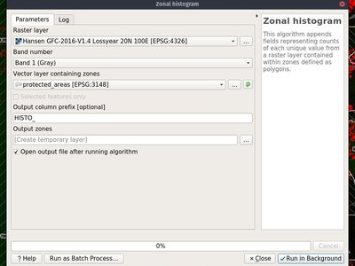
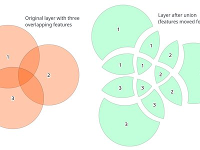
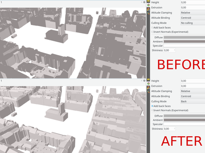

Log met wijzigingen voor QGIS 3.2¶

De grootste uitgave van QGIS ooit! QGIS 3.2 brengt een enorme lijst met nieuwe wijzigingen - de hoogtepunten daarvan zullen we hier proberen te behandelen. Zoals altijd herinneren we u er aan dat QGIS een open bron project is en vragen u om te overwegen ons te sponsoren door donaties, dragende lidmaatschappen of bijdragen aan de documentatie van de code, website, enzovoort.
Dankwoord
We would like to thank the developers, documenters, testers and all the many folks out there who volunteer their time and effort (or fund people to do so). From the QGIS community we hope you enjoy this release! If you wish to donate time, money or otherwise get involved in making QGIS more awesome, please wander along to qgis.org and lend a hand!
QGIS wordt ondersteund door donoren en dragende leden. Een huidige lijst van donoren die grote en kleine bijdragen hebben gegeven aan het project kan worden bekeken op onze lijst met donoren `. Als u een officieel dragend lid voor het project zou willen worden, bekijk dan :ref:`onze pagina voor dragende lidmaatschappen voor details. Ondersteunen van QGIS helpt ons om fondsen te verkrijgen voor onze halfjaarlijkse ontmoetingen van ontwikkelaars, de infrastructuur van het project te onderhouden en inspanningen voor het oplossen van problemen te financieren. Een volledige lijst van huidige dragende leden wordt hieronder weergegeven - een welgemeend Bedankt voor al onze ondersteuners!
QGIS is gratis software en u bent niet verplicht om maar iets te betalen voor het gebruiken ervan - in feite willen we mensen, wijd en zijd verspreid, aanmoedigen om het te gebruiken ongeacht uw financiële of sociale status - wij geloven dat het uitrusten van mensen met gereedschappen voor het maken van ruimtelijke beslissingen zal resulteren in een betere wereld voor de gehele mensheid.
- Sponsoren voor QGIS versie 3.2
- Algemeen
- Kaartgereedschap
- Mogelijkheid: Gereedschap Kaart vereenvoudigen kan nu ook objecten gladder maken
- Mogelijkheid: Gereedschap Objecten identificeren met extra opties
- Mogelijkheid: Sla ook de status Uitgevouwen/Ingeklapt op van knopen op de kaartthema’s
- Mogelijkheid: Automatische modus “Zoomen naar selectie” voor nieuwe kaartweergaven
- Mogelijkheid: Keuze voor methode van vereenvoudigen voor gereedschap Kaart vereenvoudigen
- Mogelijkheid: Zoomen naar gerelateerde objecten toegevoegd in formulieren
- Mogelijkheid: Cartesiaanse gebieden/lengtes/perimeters in Identificatieresultaten
- Expressies
- Gebruikersinterface
- Mogelijkheid: Lagenpaneel: indicaties voor gefilterde kaartlagen
- Mogelijkheid: Toestaan van aangepast voorvoegsel voor filters voor lokaliseren
- Mogelijkheid: Openen van vectoren en rasters, opgeslagen op HTTP(S), FTP, of clouddiensten
- Mogelijkheid: Snel veld voor veldberekening in werkbalk voor Lokaliseren
- Mogelijkheid: Sneltoetsen voor het schakelen van panelen
- Mogelijkheid: Zoeken naar Favoriete plaatsen in Lokaliseren
- Mogelijkheid: Projectacties sluiten en terugdraaien
- Mogelijkheid: Indicatie voor niet opgeslagen wijzigingen in titelbalk
- Mogelijkheid: Te configureren vertraging voor kaarttips
- Mogelijkheid: Laag of groep verplaatsen naar bovenste positie in paneel Lagen
- Mogelijkheid: Knop Inhoud van paneel Statistieken naar klembord kopiëren
- Mogelijkheid: Zoeken naar pagina’s Instellingen, Opties en projecteigenschappen vanuit Lokaliseren
- Mogelijkheid: Indicaties voor ingebedde lagen en groepen
- Symbologie
- Renderen
- Gegevensbeheer
- Formulieren en widgets
- Legenda van laag
- Printvormgeving
- Processing
- Mogelijkheid: Verbeterd algoritme ‘Join by attribute table’
- Mogelijkheid: Script laden uit sjabloon
- Mogelijkheid: Algoritme Objectfilter voor modellen van Processing
- Mogelijkheid: Zonehistogram
- Mogelijkheid: Algoritmes Union, Difference and Intersection geporteerd naar C++
- Mogelijkheid: Algoritme ‘Project points (cartesian)’
- Mogelijkheid: Dynamische waarden voor parameters voor meer algoritmes
- Mogelijkheid: Algoritme Multi-ring buffer (constante afstand)
- Mogelijkheid: Nieuw algoritme “segmentize”
- Mogelijkheid: Optie om punten op alle delen van polygonen te maken
- Mogelijkheid: Algoritme Rotate Features
- Feature: Lijnverloop in “Add Geometry Attributes”
- Mogelijkheid: Foto’s met geoverwijzingen importeren
- Mogelijkheid: Algoritme Swap x/y coordinate values
- Mogelijkheid: Optie voor volgorde voor “Oplopend veld toevoegen”
- Mogelijkheid: Indicaties voor eenheden van parameters voor afstand
- Mogelijkheid: Log voor algoritme kan worden opgeslagen/leeg gemaakt/gekopieerd
- Mogelijkheid: Algoritme Wedge buffer
- Mogelijkheid Buffers met variabele breedte
- Mogelijkheid: Algoritmes Rasters opnieuw classificeren
- Mogelijkheid: Algoritme Union met één enkele laag
- Opties voor toepassing en project
- Browser
- Gegevensproviders
- Mogelijkheid: Ondersteuning voor lagen met mazen
- Mogelijkheid: Automatisch instellen van standaard stijl voor lagen voor ArcGIS Feature Server-lagen
- Mogelijkheid: Snellere query’s voor Oracle
- Mogelijkheid: Tabellijst voor een verbinding van een database voor Oracle beperken tot een vooraf ingesteld schema
- Mogelijkheid: Ondersteuning voor Alleen-lezen voor gebogen geometrieën van Oracle
- Plug-ins
- 3D-mogelijkheden
Sponsoren voor QGIS versie 3.2¶
Een speciaal woord van dank aan al onze dragende leden, sponsoren en donoren voor de hulp om het ons mogelijk te maken deze uitgave te doen!
Algemeen¶
Mogelijkheid: Nieuwe gezipte projectbestandsindeling .qgz is nu de standaard indeling¶
QGZ werd als optionele indeling toegevoegd in 3.0. Door van deze indeling de standaard te maken maakt het eenvoudiger om te komen tot een container die in staat is om bronnen zoals SVG, offline gegevens in GPKG, kleurverlopen, plug-ins of scripts in te bedden.

Deze mogelijkheid werd ontwikkeld door OSLANDIA - Paul Blottiere
Mogelijkheid: Filteren op veldwaarden in widget Querybouwer¶
Bij het maken van een nieuw filter met een expressie in Querybouwer kunt u nu de waarden van de velden filteren in een voorbeeldpaneel.

Deze mogelijkheid werd ontwikkeld door Salvatore Larosa
Mogelijkheid: Kaart op VOLLEDIG scherm met Ctrl-Shift-Tab¶
Naast Ctrl-Tab kunt u nu Ctrl-Shift-Tab gebruiken, wat u de kaart zal laten zien en ALLEEN de kaart, geen werkbalken of knoppen meer (of zelfs zonder titel voor het venster in combinatie met F11). Geweldig voor projecteren op Volledig scherm via beamer of op grote schermen. U kunt nog steeds zoomen en verschuiven! (Gebaseerd op het werk van Mathieu Pellerin)
Deze mogelijkheid werd ontwikkeld door Richard Duivenvoorde
Kaartgereedschap¶
Mogelijkheid: Gereedschap Kaart vereenvoudigen kan nu ook objecten gladder maken¶
Het gereedschap Kaart vereenvoudigen is hernoemd naar “Object vereenvoudigen”, en ondersteunt nu het interactief glad maken van objecten.

Deze mogelijkheid werd mogelijk gemaakt door: North Road
Deze mogelijkheid werd ontwikkeld door Nyall Dawson (North Road)
Mogelijkheid: Gereedschap Objecten identificeren met extra opties¶
Met de nieuwe verbeteringen kan de gebruiker nu soortgelijke gereedschappen gebruiken als met Selecteren om meerdere objecten te identificeren.
Dit werd mogelijk gemaakt door Leicestershire County Council en East Hampshire District Council
Deze mogelijkheid werd ontwikkeld door Martin Dobias and Viktor Sklencar
Mogelijkheid: Sla ook de status Uitgevouwen/Ingeklapt op van knopen op de kaartthema’s¶
Elk kaartthema zal ook vastleggen welke lagengroepen en items van de legenda uitgevouwen zijn, wanneer dus een kaartthema wordt geselecteerd, wordt de status Uitgevouwen/Ingeklapt toegepast op de boom van de lagen.

Dit werd mogelijk gemaakt door Arpa Piemonte (Dipartimento Tematico Geologia e Dissesto) binnen het project ERIKUS
Deze mogelijkheid werd ontwikkeld door Martin Dobias (Lutra Consulting) en Faunalia
Mogelijkheid: Automatische modus “Zoomen naar selectie” voor nieuwe kaartweergaven¶
Een nieuwe kaartweergave kan worden geconfigureerd om automatisch in te zoomen op de huidige selectie. Kan worden gecombineerd met verschillende kaartthema’s, zoals in dit voorbeeld.

Dit werd mogelijk gemaakt door Technology One
Deze mogelijkheid werd ontwikkeld door Nathan Woodrow
Mogelijkheid: Keuze voor methode van vereenvoudigen voor gereedschap Kaart vereenvoudigen¶
Dit maakt het mogelijk dat verschillende technieken worden gebruikt voor vereenvoudigen in het interactieve gereedschap Object vereenvoudigen, inclusief het cartografisch meer plezieriger algoritme voor vereenvoudiging “Visvalingam”.

Deze mogelijkheid werd mogelijk gemaakt door: North Road
Deze mogelijkheid werd ontwikkeld door Nyall Dawson (North Road)
Mogelijkheid: Cartesiaanse gebieden/lengtes/perimeters in Identificatieresultaten¶
In QGIS 3.2 laten we nu zowel ellipsoïde als Cartesiaanse gebieden, lengtes en perimeters afzonderlijk zien in het paneel Identificatieresultaten. Het zien van de twee afzonderlijke metingen geeft gebruikers een beter begrip van potentiële problemen in gebieds- of afstandsberekeningen, veroorzaakt door incorrecte projectie of ellipsoïde keuzes.

Deze mogelijkheid werd mogelijk gemaakt door: North Road
Deze mogelijkheid werd ontwikkeld door Nyall Dawson (North Road)
Expressies¶
Mogelijkheid: Nieuwe functies voor expressies¶
- color_grayscale_average()
- color_mix_rgb()
- flip_coordinates()
- wedge_buffer()
- tapered_buffer()
- buffer_by_m()
Nieuwe variabelen:
- @project_home
- @project_author
- @project_abstract
- @project_creation_date
- @project_identifier
- @project_keywords
Deze mogelijkheid werd ontwikkeld door Mathieu Pellerin, Nyall Dawson
Mogelijkheid: Meer hulpvaardiger expressiebouwer¶
De expressiebouwer maakt het nu eenvoudiger om expressies in QGIS te bouwen!
- De bouwer laat nu de beschrijving voor gegevensgedefinieerde waarden zien, inclusief het bereik van verwachte waarden uit de expressie
- Ctrl+klikken op een naam van een functie in de huidige expressie zal automatisch de Help voor die functie openen
- Het laat nu indicaties voor delen van expressies met fouten zien
- Het laat een volledige lijst van foutberichten zien, verkregen uit het parsen van de expressie

Dit werd mogelijk gemaakt door Technology One
Deze mogelijkheid werd ontwikkeld door Nathan Woodrow
Gebruikersinterface¶
Mogelijkheid: Lagenpaneel: indicaties voor gefilterde kaartlagen¶
De weergave van de boom met lagen in het hoofdvenster (ToC) krijgt ondersteuning voor indicaties die worden weergegeven als op een vectorlaag een filter is toegepast. Dit maakt het voor gebruikers eenvoudiger om te begrijpen dat zij kijken naar een subset van alle gegevens. Klikken op het pictogram van de indicatie brengt de Querybouwer naar voren.
Dit voegt een mini-framewerk toe voor de weergave van extra pictogrammen in weergaven van de boom met lagen, naast de namen voor lagen en groepen. Tekst voor Helptips kan worden geassocieerd met indicaties om extra context voor indicaties te geven. In aanvulling daarop wordt een signaal gegeven als de gebruiker op indicaties klikt en aangepaste acties kunnen worden gedefinieerd. Het idee is dat indicaties in de toekomst kunnen worden gebruikt voor een subtiele weergave van verscheidene stukjes informatie, bijvoorbeeld:
- kaartlaag met ongeldige geometrieën
- kaartlaag met uitzonderingen voor direct opnieuw projecteren
- kaartlaag heeft een ontbrekende gegevensbron
- kaartlaag met ongeldig CRS

Dit werd mogelijk gemaakt door Arpa Piemonte (Dipartimento Tematico Geologia e Dissesto) binnen het project ERIKUS
Deze mogelijkheid werd ontwikkeld door Martin Dobias (Lutra Consulting) en Faunalia
Mogelijkheid: Toestaan van aangepast voorvoegsel voor filters voor lokaliseren¶
Voorvoegsels voor filters voor lokaliseren kunnen nu worden aangepast in de instellingen voor de toepassing op de tab “Lokaliseren”

Dit werd mogelijk gemaakt door QGIS User Group Switzerland
Deze mogelijkheid werd ontwikkeld door Denis Rouzaud, OPENGIS.ch
Mogelijkheid: Openen van vectoren en rasters, opgeslagen op HTTP(S), FTP, of clouddiensten¶
In 3.2 zijn de panelen voor het beheren van vector en raster bijgewerkt om het openen van gegevenssets van vector en raster die zijn opgeslagen op HTTP(S), FTP, of clouddiensten te vereenvoudigen. Inclusief ondersteuning voor Basis HTTP(S) authenticatie.

Deze mogelijkheid werd ontwikkeld door Mathieu Pellerin
Mogelijkheid: Snel veld voor veldberekening in werkbalk voor Lokaliseren¶
QGIS 3.2 staat het evalueren van eenvoudige expressies toe (wel, in feite ELKE QGIS-expressie… dus u zou optellen en dergelijke kunnen gebruiken als u dat echt zou willen!) door “= ” in te voeren, gevolgd door een expressie in de werkbalk Lokaliseren. Als een geldige expressie wordt ingevoerd wordt gebruikers een optie gegeven om het resultaat naar het klembord te kopiëren.
Invoeren van bijvoorbeeld “= 10/3” geeft een invoer voor Lokaliseren “Kopieer‘3.3333333’ naar klembord”.

Deze mogelijkheid werd mogelijk gemaakt door: North Road
Deze mogelijkheid werd ontwikkeld door Nyall Dawson (North Road)
Mogelijkheid: Sneltoetsen voor het schakelen van panelen¶
sneltoets Ctrl+{no}
Dit werd mogelijk gemaakt door Technology One
Deze mogelijkheid werd ontwikkeld door Nathan Woodrow
Mogelijkheid: Zoeken naar Favoriete plaatsen in Lokaliseren¶
Maakt het zoeken naar Favoriete plaatsen mogelijk. Dubbelklikken op een zoekresultaat zal zoomen naar de Favoriete plaats.
Korte video: https://www.youtube.com/watch?v=ymW4TU8QWy4
Het nieuwe filter presenteert zichzelf met een voorvoegsel “b” en met tr( “Favoriete plaats” ) als naam voor de weergave.
Deze mogelijkheid werd ontwikkeld door Klavs Pihlkjær
Mogelijkheid: Projectacties sluiten en terugdraaien¶
Twee nieuwe acties zijn toegevoegd aan het menu “Project”
- “Sluiten”: Sluit het actieve project, brengt het venster van QGIS terug naar de lijst “Recente projecten”
- “Terugdraaien”: herstelt het actieve project naar de laatst opgeslagen status, zonder rekening te houden met alle niet opgeslagen wijzigingen

Deze mogelijkheid werd ontwikkeld door: Nathan Woodrow, Nyall Dawson
Mogelijkheid: Indicatie voor niet opgeslagen wijzigingen in titelbalk¶
QGIS 3.2 volgt nu de standaard benadering voor de gebruikersinterface om aan te geven dat het huidige project niet opgeslagen wijzigingen heeft door een voorvoegsel “*” toe te voegen aan de naam van het project in de titelbalk van de toepassing. Dit maakt het eenvoudiger om in één oogopslag te zien of u nog niet opgeslagen wijzigingen heeft!
Deze mogelijkheid werd mogelijk gemaakt door: North Road
Deze mogelijkheid werd ontwikkeld door Nyall Dawson (North Road)
Mogelijkheid: Te configureren vertraging voor kaarttips¶
Deze mogelijkheid werd ontwikkeld door jdugge
Mogelijkheid: Laag of groep verplaatsen naar bovenste positie in paneel Lagen¶
Verplaatst de geselecteerde la(a)g(en) of groep(en) naar de bovenste positie in het paneel Lagen.
Deze mogelijkheid werd ontwikkeld door Mie Winstrup
Mogelijkheid: Knop Inhoud van paneel Statistieken naar klembord kopiëren¶
Het is nu mogelijk om de uitvoertabel van het paneel Statistieken naar het klembord te kopiëren.

Deze mogelijkheid werd ontwikkeld door Mathieu Pellerin
Mogelijkheid: Zoeken naar pagina’s Instellingen, Opties en projecteigenschappen vanuit Lokaliseren¶
Korte video: https://www.youtube.com/watch?v=duB2YekUmV0
Het nieuwe filter presenteert zichzelf met een voorvoegsel “set” en met tr( “Instellingen” ) als naam voor de weergave.
Deze mogelijkheid werd ontwikkeld door Klavs Pihlkjær
Mogelijkheid: Indicaties voor ingebedde lagen en groepen¶
Ingebedde projectlagen en- groepen worden nu aangegeven door een handige indicatie “ingebed”, wat het voor gebruikers onmiddellijk duidelijk maakt welke lagen en groepen in een project zijn ingebed.
Deze mogelijkheid werd mogelijk gemaakt door: North Road
Deze mogelijkheid werd ontwikkeld door Nyall Dawson (North Road)
Symbologie¶
Mogelijkheid: Mooiere kleuren voor nieuwe lagen¶
De “willekeurige” kleuren die worden toegewezen aan nieuwe lagen zijn niet langer “willekeurig” maar worden in plaats daarvan willekeurig geselecteerd uit een voorkeuzepalet van “visueel prettige” kleuren. Zeg maar tot ziens tegen de lelijke groene babyspuug lagen!
Deze mogelijkheid werd mogelijk gemaakt door: North Road
Deze mogelijkheid werd ontwikkeld door Nyall Dawson (North Road)
Renderen¶
Mogelijkheid: Verbeterde kaartdecoratie Copyright¶
- Ondersteuning voor expressie voor de tekst van het auteursrecht.
- Verbeterde opties voor opmaken van de tekst, inclusief schaduwen, omtrekken, achtergronden, etc.
Deze mogelijkheid werd ontwikkeld door Mathieu Pellerin
Mogelijkheid: Lettertype en soort lettertype kan nu worden aangepast voor Schaalbalk in het hoofdvenster¶
Deze mogelijkheid werd ontwikkeld door Mathieu Pellerin
Mogelijkheid: Aangepast SVG-pad en grootte voor decoratie Noordpijl¶
Deze mogelijkheid werd ontwikkeld door Mathieu Pellerin
Gegevensbeheer¶
Mogelijkheid: Een gematerialiseerde weergave vernieuwen¶
Vanuit de browser kunt u, met een rechtsklik op een gematerialiseerde weergave, die nu vernieuwen.

Deze mogelijkheid werd ontwikkeld door Etienne Trimaille
Mogelijkheid: Ondersteuning voor Z en M in offline bewerken¶
Offline bewerken ondersteunt nu ook lagen met coördinaten Z en M.
Dit werd mogelijk gemaakt Oester Messtechnik
Dit werd ontwikkeld door Matthias Kuhn OPENGIS.ch
Mogelijkheid: Metadata voor projecten van QGIS¶
Volgend op het werk aan de metadata dat begon in QGIS 3.0, ondersteunt 3.2 nu metadata voor projecten van QGIS. Dit maakt het mogelijk gedetailleerde metadata in te stellen in projecteigenschappen, inclusief abstracten, sleutelwoorden, contact details, links, etc.

Dit werd mogelijk gemaakt door Arpa Piemonte (Dipartimento Tematico Geologia e Dissesto) binnen het project ERIKUS
Deze mogelijkheid werd ontwikkeld door Nyall Dawson (North Road) en Faunalia
Formulieren en widgets¶
Mogelijkheid: Multi-kolom lay-out voor widget relatie met waarden voor meerdere selecties¶
Het widget voor waarde van relatie met meerdere selecties ingeschakeld ondersteunt nu meerdere kolommen. Dit maakt een beter gebruik van de horizontale schermruimte mogelijk.

Dit werd mogelijk gemaakt door Grundbuch- und Vermessungsamt van het Kanton Zug
Deze mogelijkheid werd ontwikkeld door David Signer, OPENGIS.ch
Mogelijkheid: Toestaan van het gebruiken van een URL voor aangepaste formulieren voor attributen (UI-bestand)¶
Het UI-bestand zal bij elke sessie voor het eerste gebruik worden gedownload. Dit maakt het mogelijk om bijgewerkte UI-bestanden eenvoudiger te verdelen over cliënten.
Dit werd mogelijk gemaakt door SIRS
Deze mogelijkheid werd ontwikkeld door Denis Rouzaud, OPENGIS.ch
Mogelijkheid: Formulieren voor dieper zoeken (cascading)¶
QGIS 3.2 introduceert ondersteuning voor dieper zoeken met formulieren (cascading), waarbij de waarden die beschikbaar zijn in één veld afhankelijk zijn van de waarden va andere velden. Deze mogelijkheid maakt het voor gebruikers mogelijk “waarde-relatie”-expressies te maken, gebaseerd op de huidige waarde van een ander veld in hetzelfde formulier. Wanneer de gebruiker de waarde van een veld aanpast, worden de in alle gerelateerde velden beschikbare waarden gefilterd om overeen te komen met de nieuwe waarde – wat een hiërarchische filterstrategie mogelijk maakt (dieper zoeken, of cascading) in een formulier.
Dit werd mogelijk gemaakt door Grant Boxer, NaturalGIS, Tudor Bărăscu, NotioGIS, République et canton de Neuchâtel, Arpa Piemonte, Nelson Silva, QGIS Danish User Group, Bo Victor Thomsen en Lene Fischer, North River Geographic
Deze mogelijkheid werd ontwikkeld door Alessandro Pasotti (North Road)
Legenda van laag¶
Mogelijkheid: Optionele tekst boven symbolen voor vectorlagen¶
Deze mogelijkheid stelt gebruikers in staat extra informatie toe te voegen aan de symbolen in de legenda.

Dit werd mogelijk gemaakt door Arpa Piemonte (Dipartimento Tematico Geologia e Dissesto) binnen het project ERIKUS
Deze mogelijkheid werd ontwikkeld door Martin Dobias (Lutra Consulting) en Faunalia
Mogelijkheid: Groepen/Lagen kopiëren & plakken vanuit het ene project van QGIS naar een ander.¶
Maakt het mogelijk groepen en lagen te kopiëren en te plakken tussen projecten en profielen.
Deze mogelijkheid werd ontwikkeld door Salvatore Larosa
Printvormgeving¶
Mogelijkheid: Data bepaalde tabelbron voor items in de attributentabel¶
Wanneer een attributentabel is ingesteld voor een bron “Laagobjecten”, staat deze nieuwe mogelijkheid het toe dat de onderliggende vectorlaag, van waaruit de objecten afkomstig zijn, data bepaald-gedefinieerd is.
(Alle bestaande tabelattributen (instellingen voor kolommen) worden intact gelaten, dus het instellen van een data bepaalde-tabel om een laag met andere velden te maken zal resulteren in lege kolommen in de tabel.)
Dit werd mogelijk gemaakt Kartoza/InaSAFE
Deze mogelijkheid werd ontwikkeld door Nyall Dawson (North Road)
Mogelijkheid: Metadata voor project ingebed in exports van de lay-out¶
Opslaan van een afdruklay-out naar SVG, PDF of afbeeldingen zal nu enige metadata voor het project inbedden in het gemaakte bestand. Ondersteuning voor verschillende elementen van de metadata is afhankelijk van de individuele indeling van de export.
Dit werd mogelijk gemaakt door Arpa Piemonte (Dipartimento Tematico Geologia e Dissesto) binnen het project ERIKUS
Deze mogelijkheid werd ontwikkeld door Nyall Dawson (North Road)
Mogelijkheid: Betere opmaak voor tekst van schaalbalk¶
QGIS 3.2 maakt het mogelijk dat het volledige bereik aan opties voor het opmaken van tekst wordt gebruikt in de tekst voor de schaalbalk, bijv. buffers, schaduwen, en vormen voor de achtergrond.
Onleesbare tekst voor de schaalbalk is iets uit het verleden!
Deze mogelijkheid werd mogelijk gemaakt door: North Road
Deze mogelijkheid werd ontwikkeld door Nyall Dawson (North Road)
Processing¶
Mogelijkheid: Verbeterd algoritme ‘Join by attribute table’¶
Het algoritme ‘Join by attribute table’ is opgewaardeerd om een-tot-veel samenvoegingen te ondersteunen (d.i. maken van afzonderlijke objecten voor elk overeenkomend object) als ook een optie om records die niet konden worden samengevoegd te negeren. Aanvullend kan nu een optioneel voorvoegsel voor samengevoegde velden worden gespecificeerd.

Deze mogelijkheid werd ontwikkeld door Mathieu Pellerin, Nyall Dawson
Mogelijkheid: Script laden uit sjabloon¶
Nieuwe optie om scripts voor Processing uit een aangepast sjabloon te laden

Deze mogelijkheid werd ontwikkeld door Matteo Ghetta (Faunalia)
Mogelijkheid: Algoritme Objectfilter voor modellen van Processing¶
Voegt een nieuw algoritme Objectfilter toe aan Grafische modellen bouwen. Maakt het mogelijk objecten van een bron te filteren, gebaseerd op expressies en de overeenkomende objecten te versturen naar verschillende uitvoeren als uiteindelijke producten of een andere pijplijn voor een algoritme voor verdere verwerking.
Lees deze blogpost voor meer informatie.

Dit werd mogelijk gemaakt door QGIS User Group Switzerland
Dit werd ontwikkeld door Matthias Kuhn OPENGIS.ch
Mogelijkheid: Zonehistogram¶
Dit nieuwe algoritme voegt velden toe die tellingen weergeven van elke unieke waarde uit een rasterlaag, opgenomen in zones die zijn gedefinieerd als polygonen.

Deze mogelijkheid werd ontwikkeld door Mathieu Pellerin
Mogelijkheid: Algoritmes Union, Difference and Intersection geporteerd naar C++¶
QGIS eigen algoritmes voor geoprocessing zijn geporteerd van Python naar C++. In aanvulling daarop, om de uitvoering te verbeteren, zijn een aantal problemen met deze update opgelost.
Dit werd mogelijk gemaakt door InaSAFE DFAT
Deze mogelijkheid werd ontwikkeld door Martin Dobias (Lutra Consulting)
Mogelijkheid: Algoritme ‘Project points (cartesian)’¶
Dit nieuwe algoritme voor Processing projecteert punten uit een invoer puntenlaag met een gespecificeerde afstand en richting (azimut). Het ondersteunt dynamische parameters voor de afstand en richting zodat de afstand en richting kunnen worden overgenomen uit veldwaarden of expressies.
Deze mogelijkheid werd mogelijk gemaakt door Nyall Dawson (North Road)
Deze mogelijkheid werd ontwikkeld door Nyall Dawson (North Road)
Mogelijkheid: Dynamische waarden voor parameters voor meer algoritmes¶
QGIS 3.2 borduurt voort op het werk dat begon in 3.0 om “dynamische” parameters voor geselecteerde algoritmes van Processing toe te staan. Dynamische parameters maken het voor gebruikers mogelijk om expressies of veldwaarden te gebruiken om de waarde van een parameter te specificeren terwijl het algoritme wordt uitgevoerd, dus bijv. de grootte van de buffer kan dynamisch worden berekend voor elk gebufferd individuele object.
In 3.2 ondersteunen de volgende algoritmes nu dynamische parameters:
- Gaten verwijderen
- Duplicaatpunten verwijderen
- Vereenvoudigen
- Glad maken
- Aan grid ‘snappen’
- Onderverdelen
- Doorsnede
- Vertaal
Deze mogelijkheid werd mogelijk gemaakt door: North Road
Deze mogelijkheid werd ontwikkeld door Nyall Dawson (North Road)
Mogelijkheid: Algoritme Multi-ring buffer (constante afstand)¶
Dit nieuwe algoritme berekent een multi-ring (‘donuts’) buffer voor alle objecten in een invoerlaag, met behulp van een vaste of dynamische afstand en het aantal ringen.
Deze mogelijkheid werd ontwikkeld door Alex Bruy
Mogelijkheid: Nieuw algoritme “segmentize”¶
In QGIS 3.2 zijn twee nieuwe algoritmes voor het segmenteren van gebogen geometrieën toegevoegd aan Processing.
“Segmentize by maximum distance”: Het segmenteren wordt uitgevoerd door de maximale verschuivingsafstand te specificeren tussen de originele boog en de gesegmenteerde weergave.
“Segmentize by maximum angle”: Het segmenteren wordt uitgevoerd door de maximale hoek van de radius te specificeren tussen punten op de recht gemaakte geometrie (bijv. de hoek van de boog die werd gemaakt vanuit het originele midden van de boog ten opzichte van opvolgende punten op de gelineariseerde geometrie).
Deze mogelijkheid werd mogelijk gemaakt door: North Road
Deze mogelijkheid werd ontwikkeld door Nyall Dawson (North Road)
Mogelijkheid: Optie om punten op alle delen van polygonen te maken¶
De algoritmes “Centroid” en “Point on surface” hebben een nieuwe optie om punten te maken voor elk individueel deel van invoergeometrieën.
Deze mogelijkheid werd ontwikkeld door Mathieu Pellerin
Mogelijkheid: Algoritme Rotate Features¶
Dit nieuwe algoritme maakt het draaien van objecten rond een ingestelde hoek mogelijk. Het draaien kan gebeuren rondom een ingesteld punt of rond het zwaartepunt van elk individueel object.
Deze mogelijkheid werd mogelijk gemaakt door: North Road
Deze mogelijkheid werd ontwikkeld door Nyall Dawson (North Road)
Feature: Lijnverloop in “Add Geometry Attributes”¶
Het algoritme “Add Geometry Attributes” berekent nu het lijnverloop en rechte afstanden voor lijnlagen.
Deze mogelijkheid werd mogelijk gemaakt door: North Road
Deze mogelijkheid werd ontwikkeld door Nyall Dawson (North Road)
Mogelijkheid: Foto’s met geoverwijzingen importeren¶
In QGIS 3.2 is een nieuw algoritme “Import geotagged photos” toegevoegd aan Processing. Het maakt het mogelijk een map te selecteren die het zal scannen op JPG-bestanden die zijn voorzien van geoverwijzingen en maakt een laag PointZ met het resultaat, met attributen voor pad van de foto, hoogte, richting en tijfstempel.
Optioneel mag de scan recursief zijn en kunt u een optionele tabel met goto’s maken die niet konden worden gelezen of waarin geoverwijzingen ontbreken.
Het algoritme stelt automatisch de uitvoertabel in om een widget Externe bron te gebruiken om de gekoppelde foto’s weer te geven in het formulier met attributen.

Deze mogelijkheid werd mogelijk gemaakt door: North Road
Deze mogelijkheid werd ontwikkeld door Nyall Dawson (North Road)
Mogelijkheid: Algoritme Swap x/y coordinate values¶
Dit algoritme verwisselt de waarden van de X- en Y-coördinaten in invoergeometrieën. Het kan worden gebruikt om geometrieën te repareren waarvan per ongeluk hun waarden voor breedte- en lengtegraad zijn verwisseld.
Deze mogelijkheid werd mogelijk gemaakt door: North Road
Deze mogelijkheid werd ontwikkeld door Nyall Dawson (North Road)
Mogelijkheid: Optie voor volgorde voor “Oplopend veld toevoegen”¶
Deze wijziging stelt gebruikers in staat op optioneel een sorteervolgorde in te stellen bij het toewijzen van waarden in het algoritme Oplopend veld toevoegen. Eerdere waarden werden altijd toegevoegd met behulp van de originele volgorde van de objecten. Met deze wijziging kunnen gebruikers de volgorde beheren waarin aan objecten waarden worden toegekend.
Deze mogelijkheid werd mogelijk gemaakt door: North Road
Deze mogelijkheid werd ontwikkeld door Nyall Dawson (North Road)
Mogelijkheid: Indicaties voor eenheden van parameters voor afstand¶
Wanneer een algoritme een type parameter “distance” gebruikt, zullen de eenheden nu naast de parameter worden weergegeven. Dit vermijd de verwarring bij het uitvoeren van algoritmes die afstanden gebruiken waarbij de eenheid afhankelijk is van een parameter Laag of CRS - bijv. de parameter distance in het algoritme Buffer geeft de afstand in laageenheden… dus nu tonen we in QGIS 3.2 die eenheden direct in het dialoogvenster. Hopelijk leidt dit tot minder verwarring voor de gebruiker en ongewenste “1000 graden buffers”!
Aanvullend - als de eenheid in graden is, wordt naast de parameter een klein pictogram als waarschuwing weergegeven. De Helptip voor dit pictogram adviseert gebruikers om gegevens opnieuw te projecteren in een geschikt geprojecteerd lokaal coördinatensysteem.
Deze mogelijkheid werd mogelijk gemaakt door: North Road
Deze mogelijkheid werd ontwikkeld door Nyall Dawson (North Road)
Mogelijkheid: Log voor algoritme kan worden opgeslagen/leeg gemaakt/gekopieerd¶
In het dialoogvenster voor de uitvoering van het algoritme zijn nieuwe knoppen toegevoegd om gebruikers in staat te stellen het huidige log op te slaan (naar tekst- of HTML-bestanden), de inhoud van het log te kopiëren naar het klembord en het log leeg te maken.
Dit werd mogelijk gemaakt door SMEC/SJ
Deze mogelijkheid werd ontwikkeld door Nyall Dawson (North Road)
Mogelijkheid: Algoritme Wedge buffer¶
Dit nieuwe algoritme maakt wigvormige buffers vanuit invoerpunten.
De parameter azimut geeft de hoek (in graden) aan voor het midden van de wig naar het punt. De breedte van de buffer (in graden) wordt gespecificeerd door de parameter breedte. Onthoud dat de wig zich aan beide zijden van de richting van de azimut zal uitstrekken tot de helft van de breedte van de hoek. De buitenste radius van de buffer wordt gespecificeerd via outer radius, en optioneel mag ook een inner radius worden gespecificeerd.
Het algoritme ondersteunt dynamische parameters voor azimut, breedte, en radius.
De eigen uitvoer voor dit algoritme zijn geometrieën CurvePolygon, maar deze mogen automatisch worden gesegmenteerd naar Polygonen, afhankelijk van de indeling van de uitvoer.
Deze mogelijkheid werd mogelijk gemaakt door: North Road
Deze mogelijkheid werd ontwikkeld door Nyall Dawson (North Road)
Mogelijkheid Buffers met variabele breedte¶
Nieuwe algoritmes voor Processing zijn toegevoegd om buffers met variabele breedten te maken, inclusief spits toelopende buffers (met een gespecificeerde diameter voor begin en eind) en buffers met variabele breedte uit waarden van M-lijnen.
Deze mogelijkheid werd mogelijk gemaakt door: North Road
Deze mogelijkheid werd ontwikkeld door Nyall Dawson (North Road)
Mogelijkheid: Algoritmes Rasters opnieuw classificeren¶
Twee nieuwe eigen QGIS algoritmes voor het opnieuw classificeren van rasters zijn toegevoegd aan Processing. Deze zijn eenvoudig te gebruiken, maar toch snel en stabiel, en werken voor ELK type rasterlaag dat wordt ondersteund door QGIS!
- Opnieuw classificeren op laag: classificeert een raster opnieuw met behulp van de gespecificeerde bereiken via velden min/max/waarde uit een vectortabel
- Opnieuw classificeren op tabel: classificeert een raster opnieuw met behulp van een vaste tabel die door de gebruikers is ingevoerd in het dialoogvenster van het algoritme
Dit werd mogelijk gemaakt door SMEC/SJ
Deze mogelijkheid werd ontwikkeld door Nyall Dawson (North Road)
Mogelijkheid: Algoritme Union met één enkele laag¶
Het algoritme Union mag nu worden uitgevoerd met één enkele invoerlaag om een overlap tussen de objecten op de laag op te lossen. Als bijvoorbeeld een gebied wordt bedekt door drie objecten, zal dat gebied uit die objecten worden gesneden en zullen drie nieuwe objecten worden toegevoegd, waarbij de attributen van de originele objecten worden gekopieerd.

Dit werd mogelijk gemaakt door InaSAFE DFAT
Deze mogelijkheid werd ontwikkeld door Martin Dobias (Lutra Consulting)
Opties voor toepassing en project¶
Mogelijkheid: Verplichte lagen in project¶
Voor verplichte lagen geldt dat zij niet uit het project kunnen worden verwijderd. Dit voegt extra beveiliging toe om gebruikers van het project te beschermen tegen het verwijderen van lagen waarvan zij denken dat die niet nodig zijn (bijv. gebruikt bij samenvoegingen, relaties, expressies).
Dit werd mogelijk gemaakt door Arpa Piemonte (Dipartimento Tematico Geologia e Dissesto) binnen het project ERIKUS
Deze mogelijkheid werd ontwikkeld door Martin Dobias (Lutra Consulting) en Faunalia
Mogelijkheid: Projecten in database PostgreSQL opslaan en laden¶
Gebruikers kunnen nu hun projecten opslaan in een database van PostgreSQL. Project kan worden opgeslagen in het menu Project > Opslaan naar > PostgreSQL en geladen met behulp van het menu Project > Openen uit > PostgreSQL. In de database opgeslagen projecten kunnen ook worden geladen via het venster van de browser (projecten worden weergegeven onder het schema waaronder zij werden opgeslagen, samen met andere lagen).
Opslaan/laden van projecten van QGIS moet expliciet zijn ingeschakeld in de instellingen voor de verbindingen van PostgreSQL: er is een nieuwe optie “Allow saving/loading QGIS projects in the database” die standaard is uitgeschakeld.
Een nieuwe API werd geïntroduceerd die het maken van aangepaste implementaties voor het opslaan van projecten mogelijk maakt (zou kunnen worden gebruikt door plug-ins). Gerelateerde QEP: https://github.com/qgis/QGIS-Enhancement-Proposals/issues/118
Dit werd mogelijk gemaakt door Arpa Piemonte (Dipartimento Tematico Geologia e Dissesto) binnen het project ERIKUS
Deze mogelijkheid werd ontwikkeld door Martin Dobias, Peter Petrik (Lutra Consulting) en Faunalia
Browser¶
Mogelijkheid: Verbindingen voor XYZ-tegels opslaan/laden¶
Vanuit het paneel Browser kunnen items voor XYZ-tegels worden geëxporteerd/geïmporteerd naar/vanuit een XML-bestand.

Deze mogelijkheid werd ontwikkeld door Salvatore Larosa
Mogelijkheid: Het thuispad voor het project kan handmatig worden ingesteld¶
Deze nieuwe mogelijkheid in QGIS 3.2 maakt het mogelijk het thuispad voor het project (dat wordt gebruikt door de browser om het item ‘Thuis voor project’ te maken) om door gebruikers te worden ingesteld voor een project, in plaats van altijd overeen te komen met de locatie waar het project is opgeslagen.
Dit stelt gebruikers in staat om het thuis voor het project in te stellen voor een map die gegevens en andere inhoud bevat, en is speciaal nuttig voor organisaties waar projecten van QGIS niet worden opgeslagen in de bronmap van een ‘project’ van de organisatie.
Thuispaden mogen ook worden ingesteld voor relatieve paden, in welk geval zij relatief zullen zijn aan de locatie waar het project is opgeslagen.
Het pad kan worden ingesteld via het dialoogvenster Projecteigenschappen, of door met rechts klikken op het item Thuis voor project in de browser en te selecteren ‘Thuis voor project instellen’.

Dit werd mogelijk gemaakt door SMEC/SJ
Deze mogelijkheid werd ontwikkeld door Nyall Dawson (North Road)
Gegevensproviders¶
Mogelijkheid: Ondersteuning voor lagen met mazen¶
Het initiële werk is gedaan om lagen met mazen te introduceren die het weergeven van gegevens op gestructureerde of niet gestructureerde mazen (rasters) ondersteunen in aanvulling op raster- en vectorlagen. Dit is nog steeds een werk in uitvoering, waarvan verwacht wordt dat het volledig zal zijn uitgevoerd QGIS 3.4. Het werk tot dusver leidt tot het maken vaneen nieuwe bibliotheek MDAL voor afhandeling van de verschillende indelingen van op mazen gebaseerde gegevens en onder de motorkap zijn er nieuwe APIs geïntroduceerd, echter de gebruikersinterface is nog niet geïmplementeerd.
Voor meer informatie, zie:
https://github.com/qgis/QGIS-Enhancement-Proposals/issues/119
en
https://github.com/lutraconsulting/MDAL

Deze mogelijkheid werd ontwikkeld door Peter Petrik en Martin Dobias (Lutra Consulting)
Mogelijkheid: Automatisch instellen van standaard stijl voor lagen voor ArcGIS Feature Server-lagen¶
Wanneer lagen vanaf een Feature Server worden geladen in QGIS 3.2, zal daarop automatisch dezelfde stijl worden toegepast als die welke is gespecificeerd voor die laag op de server, overeenkomend met het uiterlijk van de laag wanneer die wordt geladen in ArcGIS.
Dit werd mogelijk gemaakt door SMEC/SJ
Deze mogelijkheid werd ontwikkeld door Nyall Dawson (North Road)
Mogelijkheid: Snellere query’s voor Oracle¶
Bepaalde bewerkingen voor lagen van Oracle zijn behoorlijk sneller gemaakt, bijv. overeenkomsten van niet hoofdlettergevoelige waarden voor objecten.
Deze mogelijkheid werd mogelijk gemaakt door: North Road
Deze mogelijkheid werd ontwikkeld door Nyall Dawson (North Road)
Mogelijkheid: Tabellijst voor een verbinding van een database voor Oracle beperken tot een vooraf ingesteld schema¶
Deze wijziging maakt het mogelijk at een schema wordt ingesteld in de eigenschappen voor verbindingen van een database van Oracle. Indien ingesteld zullen alleen tabellen die in dat schema zijn opgenomen worden gescand en vermeld voor de verbinding.
Eerder bestond de optie om de scan te beperken tot tabellen die aan de gebruiker toe behoorden, maar die optie ondersteunt niet het gebruik waarbij een verbinding toegang tot de tabellen van een andere gebruiker moet hebben, en de standaard instelling “scan everything” is te uitgebreid (omdat het vaak meerdere minuten vergt om uit te voeren, in het bijzonder wanneer geometrietabellen worden weergegeven).
Dit werd mogelijk gemaakt door Open Spatial
Deze mogelijkheid werd ontwikkeld door Nyall Dawson (North Road)
Mogelijkheid: Ondersteuning voor Alleen-lezen voor gebogen geometrieën van Oracle¶
Eerder werden deze geometrieën geluidloos genegeerd.
Dit werd mogelijk gemaakt door Open Spatial
Deze mogelijkheid werd ontwikkeld door Nyall Dawson (North Road)
Plug-ins¶
Mogelijkheid: Geschiedenis voor query in DB Manager toegevoegd¶
In 3.2 is het mogelijk om query’s voor SQL op te slaan. De geschiedenis voor de query ‘s is beschikbaar op de tab SQL-venster van de plug-in DB Manager.

Deze mogelijkheid werd ontwikkeld door Salvatore Larosa
Feature: DB Manager uitvoeren van SQL op achtergrond¶
Deze mogelijkheid werd ontwikkeld door Paul Blottiere
3D-mogelijkheden¶
Mogelijkheid: 3D-polygonen: Optioneel genereren van achterkanten¶
Soms hebben gegevenssets met 3D-polygonen geen consistente ordening van punten (met de klok mee vs. tegen de klok in) en dat zorgde voor sub-optimale resultaten in de 3D-weergave: ofwel enkele polygonen (muren) lijken te ontbreken als maken van achterkanten is ingeschakeld - of sommige polygonen zijn niet juist voorzien van een schaduw als maken van achterkanten is uitgeschakeld. met de nieuwe optie Achterkanten toevoegen ingeschakeld, zal de vormgever driehoeken genereren in beide richtingen (voor- en achterkant) wat de kwaliteit van renderen voor dergelijke gegevenssets aanmerkelijk verbeterd.
Het enige nadeel bij het gebruiken van deze optie is dat meer grafisch geheugen wordt gebruikt (dubbele hoeveelheid ten opzichte van gegevens van punten). Zorg er voor dat de modus voor maken is ingesteld op “Back” bij het gebruiken van deze optie, anders zal er geen zichtbaar verschil zijn omdat de scene nog steeds polygonen met onjuiste schaduwen zal renderen.
De afbeelding bevat de vrij verkrijgbare gegevensset Prague 3D buildings.

Deze mogelijkheid werd ontwikkeld door Martin Dobias (Lutra Consulting)